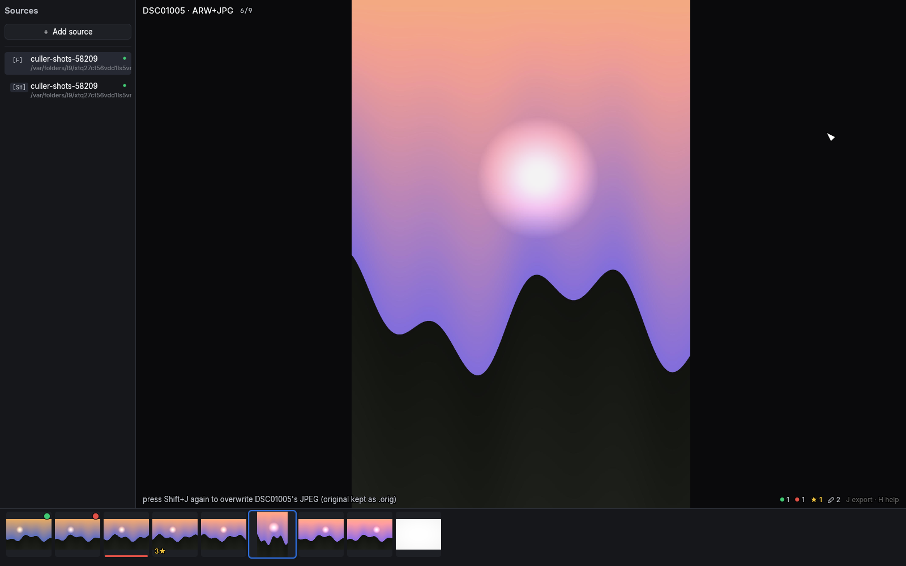

Sources
S opens the sources pane: the saved places you cull from. While it's
open it owns the keyboard — ↑/↓ select, Enter opens, Esc closes.

Folders, cards and shares
- + Add source (or
N) adds a local folder, a network share, or an SD card — mounted volumes with aDCIMfolder are auto-detected and named after the card. - Cards, shares and servers get a deeper prefetch window and more decode workers, since their latency, not your CPU, is the bottleneck.
- Folders opened from the command line or with
Ostay ad-hoc — they are never silently saved. Add them explicitly if you want them to stick. Backspaceremoves the selected source: the first press arms (the row turns red), the second confirms. Only the registry entry is removed — your photos and sidecars are untouched.Rrenames the selected source in place — type the new name,Enterkeeps it,Escreverts. Names matter most with several Immich servers: the upload destination dropdown shows them, so "Home NAS" reads better there than an IP and port.- Each source remembers your position and filter, so switching back resumes where you left off.
macOS folder permissions
The first time you add a source, macOS's folder picker grants access automatically. If that folder lives on your Desktop, in Documents/Downloads, on an SD card, or on a network drive, macOS may ask again the next time you open culler — that's expected: the system is re-confirming direct access outside the picker, not reporting a bug. Click Allow (or approve it under System Settings → Privacy & Security → Files and Folders) and it won't ask again for that folder.
Immich
Add an Immich server with its URL, an API key, and an optional name
(left empty, the server's address becomes the name — the field's hint
shows exactly what you'd get; R in the pane renames later). Test &
add checks the URL and key against the server before saving. The key
goes into the OS keychain (macOS Keychain / Windows Credential Manager),
not into a file on disk.
To create the key: in the Immich web app, click your avatar → Account Settings → API Keys → New API Key. The simplest choice is to grant all permissions — culler reads, rates, uploads and trashes on your behalf, so a broadly-scoped key is what the integration expects. If you prefer a scoped key, this is what each part of culler needs (permission names as of current Immich; older servers only offer all-powerful keys):
| To be able to… | the key needs |
|---|---|
| browse and cull (incl. stepping into stacks) | asset.read, asset.view, asset.download, timeline.read, album.read, stack.read, user.read |
| sync picks, stars and archive | asset.update |
| move rejects to the server trash | asset.delete |
| upload (including edited JPEGs, with stacking) | asset.upload, albumAsset.create, stack.create, stack.delete |
A key missing a write permission surfaces the server's error where the operation lives: batch failures in the status line, sync failures in the pending-work pill (where the sync queue keeps retrying until the key is fixed).
One case deserves its own warning, because Immich adds permissions over
time: a key created before your server knew about stacks doesn't gain
stack.create when the server upgrades — even if you ticked every box
at the time. Uploads then succeed but pairs land unstacked, reported as
"uploaded, but could not stack" warnings. Add stack.create and
stack.delete to the key (Account Settings → API Keys) and re-run the
upload — the server dedupes the already-sent photos and just creates
the stacks.
Culling a server works exactly like culling a folder — the server renders the previews, culler streams them through a local disk cache (revisits are instant), and the keys are the same. Opening a big timeline is immediate: the first thousand photos appear within about a second and you can start culling right away while the rest stream in behind them (the pending-work pill counts the scan — that's culler reading the server's catalog, not downloading your photos; image bytes are only ever fetched around where you're looking. New photos append at the end, and the library settles into capture-time order once everything has arrived, without moving the photo you're on). If some pages fail to load — a straining server, a network blip — culler keeps everything that arrived and the pill tells you how much is missing and how to retry; you never lose a loaded timeline to one bad request. Videos are left out: culler is a photo culler.
RAW+JPEG shot pairs that live on the server as two separate assets are
culled as one photo, exactly like a local folder pairs them: the
camera JPEG is what you see, the overlay says so ("DSC09 · ARW+JPG" —
every remote photo shows its file kind there), and whole-photo actions
(rating, archive, trash, download) cover both assets. Server-side
stacks are a different thing — distinct shots grouped behind a cover —
and keep their own badge, count and G step-into.
The difference from a folder is where state goes:
Write-through sync
Ratings, picks and labels write through to the server as you press the keys: picks become Immich favorites, stars become the server rating. A failed write retries on its own; while anything is queued or failing, the pending-work pill says so. Develop settings and crops stay local — they travel only when you export or upload (edit round-trip).
Albums
Press → on an Immich row (or click its ▸ chevron) to expand the
server's albums as indented sub-rows with their photo counts; ←
collapses (from an album row it also jumps back to the parent). Open an
album with Enter to cull just that album.
An album is a view, not a separate library: same photos, same state. A
rating you set inside an album is simply there when you reopen the full
timeline, previews already fetched don't re-download, and each album
remembers its own position and filter. Album lists are fetched fresh per
session (albums change on the server); if the fetch fails, the row says
so and → retries. Backspace does nothing on an album row — albums are
server objects, and culler won't delete those from a list pane.
Stacks: G
Stacked assets (RAW+JPEG groups, edit versions) show their cover with a
member-count badge. G steps into the stack — the members become the
view — and G or Esc steps back out. Rejecting inside a stack stays
local until you archive or trash via the
apply panel; some actions (Compare, Survey,
the apply panel itself) are unavailable inside a stack.